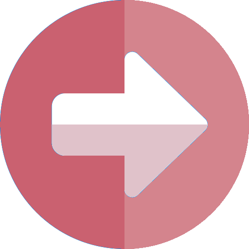

~
à propos de moi
Je m'appelle Cassandra, j'ai 28 ans et je suis maman de deux petites filles.
Je suis passionnée de sport et de cuisine végétale !
Après avoir passé une licence en psychologie à l'université de la Sorbonne Paris Nord, je me suis
orienté vers les ressources humaines au sein de l'armée de l'air durant quelques années.
Cependant, dès le début de ma grossesse, j'ai ressenti le besoin d'amener plus de sens et de douceur
dans ma vie, aussi bien personnelle que professionnelle. La condition de femme enceinte m'a poussé à
trouver des solutions plus naturelles et douces pour me soigner, renforcer mon système immunitaire,
m'aider dans ma grossesse et faire en sorte que mon post partum se passe au mieux.
C'est tout naturellement que je me suis tourné vers la naturopathie, d'abord en tant que cliente, et
aujourd'hui en tant que praticienne en naturopathie.
J'ai profité de la fin de mon congé parental en 2020 pour intégrer l'Institut de Naturopathie Humaniste d'Odile Chabrillac.
Je me suis aussi formé cette année-là au Reiki niveau I et niveau II (lignée de Mikao USUI), afin
d'agrandir mon champ
d'action et pouvoir accompagner les personnes énergétiquement, auprès de Maître Joëlle DEBEAUSSE.
Enfin, j'entame en 2023 une nouvelle formation pour devenir Doula post-natal auprès de la
merveilleuse école Maternité Sacrée afin d'agrandir mon
offre destinée aux parents, et plus particulièrement aux mamans. J'ai à cœur d'aider les femmes, et
les couples de façon générale à vivre ce changement de vie avec plus de douceur, aussi bien
psychologiquement que physiquement.
~
mes formations
 formation Doula post-natal
Maternité Sacrée - 2023
praticienne en naturopathie
Institut de Naturopathie Humaniste - 2023
Reiki niveau II
Maître Joëlle DEBEAUSSE, lignée de Mikao USUI - 2022
Reiki niveau I
Maître Joëlle DEBEAUSSE, lignée de Mikao USUI - 2021
licence en psychologie
Sorbonne Paris-Nord - 2021